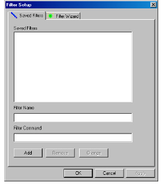
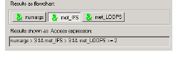

To filter query results
1 Do one of the following:
• Click the Filter List button, for example, ().
• Right-click an entity and select Select Filter.
The Filter Setup dialog box appears.

2 Click Filter Wizard.
Note: When you invoke the Filter Setup dialog box, you can choose from among the stored filters. If you select a filter, it remains in effect until you select a different filter or quit DIScover.
3 The Attributes list allows you to choose the descriptive quality that you are searching for, for example, an entity’s symbol name. From the Attribute list, choose an attribute, for example, If statements.
4 The Operations list allows you to choose the numerical or string operation you obtain a match by (in the symbol name example, operation options are “string starts with ...” and so on). From the Operation list, choose an operation.
5 The Arguments field allows you to enter the criteria you want to apply to your operation, for example, symbol names starting with the letter “b”. In the Argument field, type an argument.
6 Click Add to Results.
The Filter Wizard displays the filter string in the Flow Chart and Access Expression fields.

7 To supply additional filter criteria, repeat steps 3 to 6.
8 Click Apply.
9 Click OK.
The filtered list appears for viewing in the Results window.
While a filter is in effect, the Filter List button at the bottom of the Results window is highlighted and its numbering changes from n of m to n of p from m. This translates as n items selected from a subset of p items filtered from a total of m items. For example, a label of 0 of 42 from 216 means that there are no items currently selected, there are 42 items displayed as a result of the current list filter, and there are 216 items in the complete list.